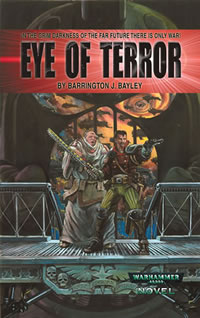

Series
Rogue Trader Novel Series
Schrijver: Andy HoareJaren actief: 2006-?Aantal boeken: 2
Boeken
Eye of Terror
Schrijver: Barrington J. BayleyPublicatiejaar: 1999 Het verhaal: Terwijl de oorlogsvloten van het Keizerrijk zich voorberiden op een kruistocht naar het hart van Chaos, zoekt de gierige Rogue Trader Maynard Rugolo macht en schatten op de werelden op de rand van dat zeer angstaanjagend krankzinnige rijk: de Eye of terror!
Farseer

Schrijver: William KingPublicatiejaar: 2002 Het verhaal: Rogue Trader Janus Darke is een wanhopige man. Eens rijk en beroemd, hij werd door een pech naar de rand van de ondergang gebracht. Dromend over vergane glorie en verloren in wanhoop, is een opdracht van twee mysterieuze vreemdelingen aan te nemen het laatste wat hij wil; een reis naar de Eye of Terror, het donkere hart van de Melkweg. Maar Janus komt in meer gevaar terecht dan hij zich ooit had kunnen voorstellen, hij wordt namelijk naar het midden van een dodelijke machtsstrijd tussen de Eldar en hun oude vijand, een daimonenprins van Slaanesh, getrokken.